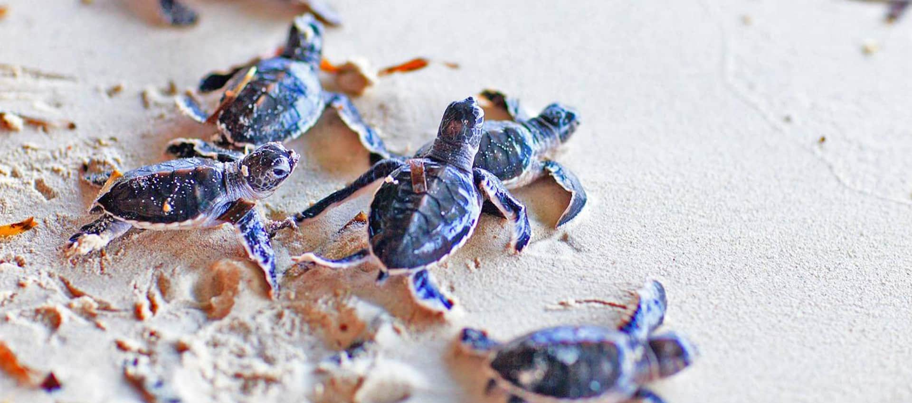

Turtle categories
Among the 250 species of turtles on Earth, seven of them live in the ocean (called sea turtles), and the remaining 243 species live on land (terrestrial turtles called tortoises) or in freshwater ponds and marshes. Five of the seven species of sea turtles – the Green Turtle (Chelonia mydas), Hawksbill Turtle (Eretmochelys imbricata), Olive Ridley (Lepidochelys olivacea), Loggerhead (Caretta caretta) and Leatherback (Dermochelys coriacea) – visit the Sri Lankan shores to nest. Three species of freshwater turtles – Parker’s Black Turtle (Melanochelys trijuga pakeri) Sri Lanka Black Turtle (Melanochelys trijuga thermalis) and the Soft or Flapshell turtle (Lissemys punctata punctata) – and one terrestrial tortoise, the Star tortoise (Geochelone elegans), can also be found in Sri Lanka.
The Green turtle (Chelonia mydas) is the most commonly found turtle in Sri Lanka and one of the largest known sea turtles. It can be recognized from its flattened body covered by a tear shaped shell that is blackish grey in colour, a smaller head than the loggerhead turtle and a pair of large paddle like flippers. The adult turtle is relatively large weighing between 68 and 190 kg with exceptional species weighing as much as 315 kg
The Olive Ridley Sea turtle (Lepidochelys olivacea) is found existing in the warm waters of the Indian Ocean. It is relatively small in size with a black heart shaped upper exoskeleton that turns olive green in adulthood. It averages 60-70 centimeters in length, with a weight not exceeding 50kg.
Sri Lankan Hawksbill Turtle The Hawksbill turtle (Eretmochelys imbricata) is a marine turtle that is listed as critically endangered by the World Conservation Union as a result of poachers seeking its beautiful ‘tortoise-shell’, which is commercially valuable, human consumption of tortoise flesh & eggs in addition to the reptile getting wedged in fishing gear.

The Leatherback Sea turtle (Dermochelys coriacea) is known as the largest of all living turtles and the fourth heaviest modern day reptile. It can be recognized by its large grayish-black teardrop shaped body covered by skin and oily flesh and the seven prominent ridges that run from the front to the back of its body. The Leatherback sea turtle grows up to seven feet (two meters) and is known to weigh over 2000 pounds (900 kg).
| Green Sea-Turtle | Olive Ridley | Hawksbill sea turtle | Sri Lankan Leatherback Sea turtle | |
|---|---|---|---|---|
| Weight | 315 kg | 50 kg | Between 45 and 68 kg | 900 kg |
| Appearance | Flattened body covered by a tear-shaped shell that is blackish grey in colour, a smaller head than the loggerhead turtle and a pair of large paddle-like flippers. | It is relatively small in size with a black heart-shaped upper exoskeleton that turns olive green in adulthood. | In appearance, it is dark golden brown in colour with reddish orange streaks, its most distinctive feature being the thick scutes that make up its hard upper shell. | It can be recognized by its large grayish-black teardrop-shaped body covered by skin and oily flesh and the seven prominent ridges that run from the front to the back of its body. |
| Regions | subtropical and temperate regions of the Atlantic, Pacific, and Indian Oceans, and in the Mediterranean Sea | Atlantic, Pacific, and Indian Oceans | west Atlantic (Caribbean), Indian, and Indo-Pacific Oceans | Northwest Atlantic, West Pacific, and East Pacific |
| The End | ||||